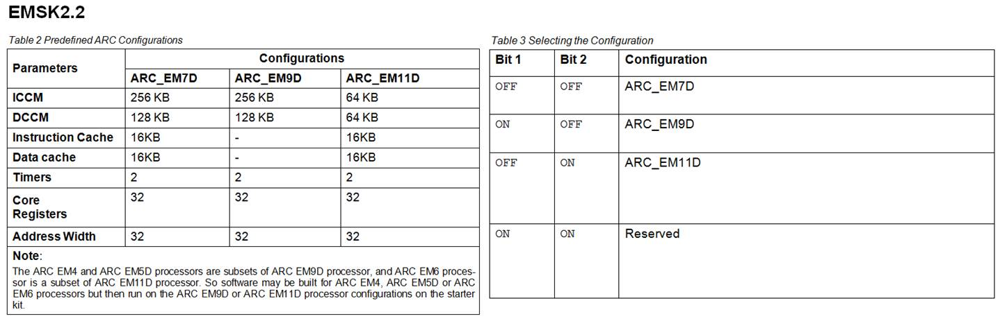
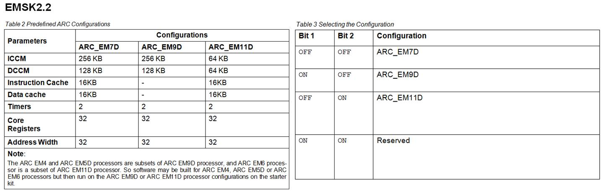

ARC EM Starter Kit¶
Introduction¶
The DesignWare® ARC® EM Starter Kit (EMSK, emsk) enables rapid software development, code porting, software debugging, and profiling for ARC EM4, EM6 (EMSK 1.1), EM5D and EM7D (EMSK 2.0/2.1), EM9D and EM11D (EMSK 2.2/2.3) processors.
Note
Caches are not integrated in EM5D (EMSK 2.0/2.1) and EM9D (EMSK 2.2/2.3) configurations. If program code runs in DDR memory, SPI and IIC devices should run at a slower frequency. EMSK 1.0 can be upgraded to EMSK 1.1 using EMSK 1.1’s firmware, EMSK 2.0, 2.1 and 2.2 can be upgraded to EMSK 2.3 using EMSK 2.3’s firmware.
The EMSK consists of a hardware platform and a software package, including pre-installed FPGA images of different configurations of the ARC EM Processor with peripherals.
The development board is based on a Xilinx Spartan®-6 LX45 FPGA. It supports hardware extensions using six 2x6 connectors supporting a total of 48 user I/O pins (plus power and ground pins) that can be used to connect components such as sensors, actuators, memories, displays, buttons, switches, and communication devices. A Digilent Pmod™ compatible extension board containing a four-channel 12-bit A/D converter with an IIC interface and an AC power adapter are included in the package.

Usage¶
EM core configurations¶
The FPGA board includes an SPI flash storage device pre-programmed with FPGA images containing different configurations of DesignWare® ARC EM cores.
The FPGA image can be selected using the pins 1 and 2 of the SW1 switch on the board:

The following tables provide the details of supported EM Core configurations for different versions of EMSK board.
 


Peripherals¶
There are many peripheral devices available, such as SPI master, SPI slave, IIC, UART, GPIO. External hardware interface devices can be connected to the EMSK using Pmod Connectors. The Pmod connectors are controlled by Pmod mux controller.
The peripheral memory mapping depends on the AHB address width. The configuration ARC_EM4_16CR uses an address width of 24 bits. The other configurations use an address width of 32 bits. The peripheral connections and memory mappings for different versions of EMSK board are shown below:


Peripherals interrupts¶
Peripherals can generate interrupts to the CPU. The interrupt irq assignments are as follows.